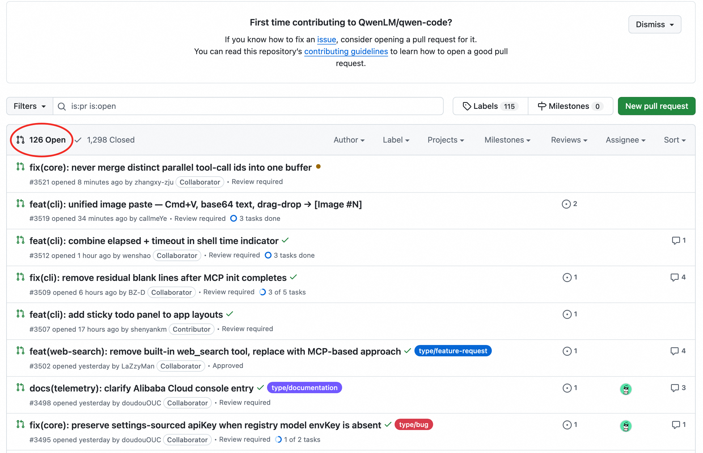
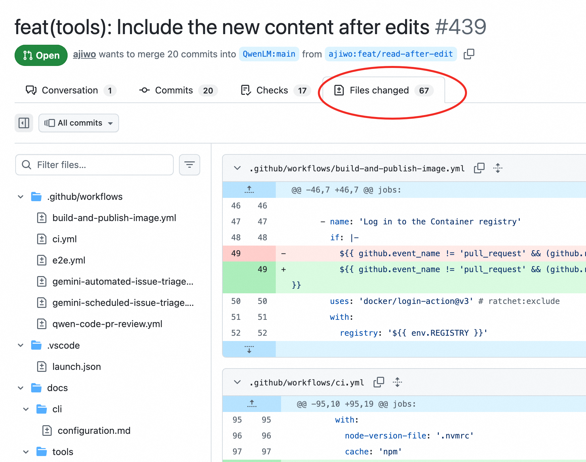
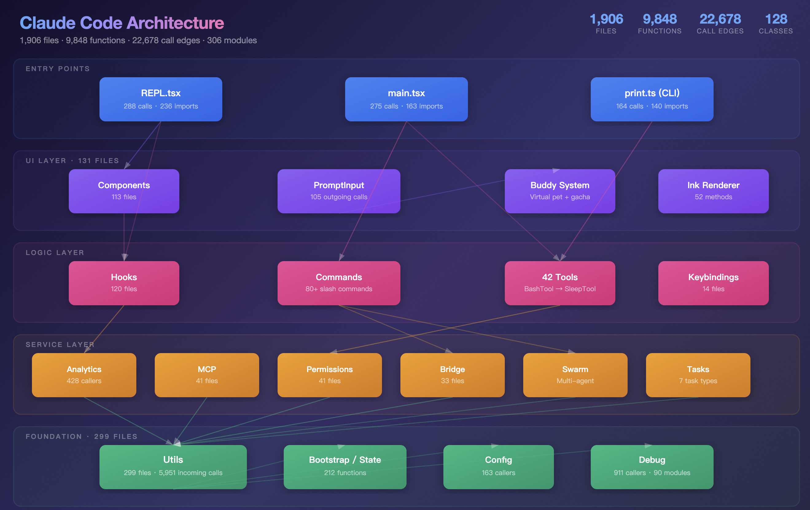

作为大模型的"结构信息预处理器"和"代码洞察引擎"
2026-04
在大型项目中，面对上百个待合入的 PR，从哪里开始 review？如何确定优先级和合入顺序？
修改一个函数后，如何快速知道会影响哪些函数或模块？
接手一个新项目，如何快速了解整体架构和关键模块？
收到一个 GitHub issue，如何从模糊描述快速定位到代码里的根因函数？
传统方式：人工阅读代码 → 耗时耗力，容易遗漏
大模型方式：发送大量代码 → Token 成本极高
核心理念：用图分析缩小代码范围，用结构信息提供全局视角，用模式检测发现隐藏问题。
纯图分析，无需发送代码
代码审查场景实测数据
节省 ~96% tokens: 一次索引，多次查询，零重复成本
传统方式：代码 → 大模型 → 答案（每次发送大量代码）⚠️ 实测：一次代码审查消耗约 1,200,000 tokens
CodeGraph：代码 → 索引（一次性）→ 结构化查询/向量预筛选 → 精准代码片段 → 大模型（只发送相关代码）✓ 实测：一次代码审查消耗约 50,000 tokens
| 优势 | 说明 |
|---|---|
| 降低Token消耗 | 索引复用、精准提取、适用架构分析/代码审查，e.g., 代码审查节省~1,200,000 tokens |
| 结构洞察 | 图分析、演化分析、模式检测、量化指标，e.g., 发现高耦合、循环依赖等架构问题 |
| 基于NeuG和Zvec底座，高效图查询与探索 | 高效图查询、可视化，支持在图上一步步深入探索 |
| 特性 | 说明 |
|---|---|
| 部署方式 | 完全本地（NeuG + zvec 都是嵌入式数据库） |
| 隐私保障 | 代码永不离开用户机器 |
| 使用方式 | Python API、CLI 命令行 |
| 大模型集成 | MCP 服务器 |
| 扩展性 | 通过 BaseAdapter 接口快速添加新语言支持 |
pip install codegraph-ai# 初始化索引
codegraph init --repo /path/to/project
# 自然语言查询（与大模型集成）
codegraph query "Who calls funcA?"
# 生成架构报告
codegraph analyze --output report.md
✓ 内置查询、架构报告等方法
✓ 易于与大模型集成
from codegraph.core import CodeScope
cs = CodeScope('.codegraph')
# 使用内置方法
hotspots = cs.hotspots(topk=10)
# 或自定义 Cypher 查询
rows = cs.query('''
MATCH (c:Function)-[:CALLS]->(f)
RETURN c.name
''')
✓ 调用内置分析方法
✓ 自定义 Cypher 查询
用户提问
↓
CodeGraph（图 + 向量分析）
- 结构查询定位相关模块
- 向量搜索找到相似函数
- 图遍历分析调用链
- 模式检测发现架构问题
- 提取精准代码片段
↓
大模型（深度理解）
- 输入：精准代码 + 结构信息 + 模式检测结果
- 输出：针对性分析报告
↓
用户获得高质量答案CodeGraph 如何在实际工作中帮助你？
评估 PR 风险，优化合入顺序
聚焦关键问题，引导主动洞察
理解代码库整体结构，识别架构问题
Graph + Vector 协同，将 issue 描述映射到代码
"当前 100 多个 PR，怎么确定 review/合入顺序？"

"帮我分析 qwen-code repo 中 100 多个 PR，怎么确定 review/合入顺序？"
⚠️ Token 消耗：~500,000 tokens
# QwenLM/qwen-code PR Security Risk Assessment ## Executive Summary | Metric | Count | |--------|-------| | Total PRs Analyzed | 117 | | OPEN (needs review) | 67 | | HIGH Risk (OPEN) | 15 | | MEDIUM Risk (OPEN) | 23 | | LOW Risk (OPEN) | 29 | ## Key Findings - Auth & credential handling is the most security-sensitive area - Conflict Cluster A (OpenAI/Auth) is highest-priority - PR #439 (+5425/-671, 67 files) is largest OPEN PR - 24 stale PRs should be evaluated ## Conflict Clusters ### Cluster A: OpenAI/Auth Configuration Files at risk: - packages/cli/src/config/auth.ts - packages/cli/src/config/config.ts - PRs: #164, #294, #339 Risk: CRITICAL — Must be reviewed together ### Cluster B: Content Generator Pipeline PRs: #112, #404, #429, #476, #485, #492... Risk: HIGH — Duplicate implementations detected ## Merge Strategy - Category 1: Auto-mergeable (18 PRs) - Category 2: Independently Reviewable (18 PRs) - Category 3: Require Joint Review (18 PRs)
基于图结构分析
✓ Token 消耗：50,000
纯图分析，无需发送代码
# PR Review Report — QwenLM/qwen-code ## Executive Summary - Total PRs analyzed: 137 - Auto-merge candidates: 33 - Independent review: 30 PR(s) - Conflicting groups: 4 component(s) (75 PR(s)) - 🔴 CRITICAL: 2 PR(s) - 🟠 HIGH: 17 PR(s) - 🟡 MEDIUM: 64 PR(s) - 🟢 LOW: 54 PR(s) ## Part 1 — Auto-merge Candidates | PR | Author | Risk | Impact Scope | |----|--------|------|-------------| | #3564 | huangrichao2020 | 🟢 LOW | 0 | | #3563 | huangrichao2020 | 🟢 LOW | 0 | | #3522 | pomelo-nwu | 🟢 LOW | 0 | ## Part 3 — Conflicting Group 1 🔴 CRITICAL | 40 PR(s) | max score: 13.38 | PR | Author | Risk | Impact Scope | |----|--------|------|-------------| | #2220 | Mingholy | 🔴 CRITICAL | 110 | | #2731 | tanzhenxin | 🔴 CRITICAL | 69 | | #2573 | netbrah | 🔴 CRITICAL | 69 |
纯 LLM 要达到函数级别的冲突识别精度，需要发送更多代码上下文，Tokens 消耗将进一步增加数倍，而 CodeGraph 通过图结构天然支持函数级分析。
"合入 PR #439，影响面多大？"

"Q1: 合入 PR #439，影响面有多大？"
"Q2: 合入 PR #439，具体来说，它修改的 functions，在原代码中哪些地方被调用？"
Token 消耗：~700,000 tokens
⚠️ 冲突检测仍为文件级别，可能误判
上下文撑爆：需要逐个分析修改的代码 diff，context window 溢出，无法完成分析。
根本原因：LLM 需要查看每个修改的 diff 信息，代码量远超上下文窗口限制
查询 PR 修改的 functions 的调用链，得到完整影响面：
MATCH (pr:PR {id: 439})
-[:MODIFIES]->(f:Function)
OPTIONAL MATCH (f)
<-[:CALLS]-(c:Function)
RETURN c.name
Token 消耗：0
✓ 函数级调用关系，毫秒级返回
查询与 #439 共同修改 functions 的 PR，得到直接冲突清单：
MATCH (pr1:PR {id: 439})
-[:MODIFIES]->(f:Function)
MATCH (pr2:PR)-[:MODIFIES]->(f)
WHERE pr2.id <> 439
RETURN pr2.id, collect(f.name)
Token 消耗：0
✓ 不受 PR 大小限制，函数级冲突识别
LLM 对大型 PR 的影响面分析能力有限：Q1 花费 70 万 tokens 仅得到文件级结果，Q2 直接上下文溢出。而 CodeGraph 通过图查询0 token 即可获得函数级调用关系，并支持递归探索。
从被动查询 → 到主动洞察 → 再到深度探索
用户问题："帮我分析一下 Claude Code 代码架构"

✨ 从图的结构性角度分析代码
用户问题："这个 GitHub issue #1234 报告的 crash，根因在代码哪里？"
cross_locate(issue.body)| 信号 | 分值 |
|---|---|
| 函数名直接出现 | +1.0 |
| 文件路径匹配 | +0.8 |
| 语义匹配 (zvec) | +sim |
| 调用者（每跳衰减） | +0.5/h |
zvec 提供 0~1 余弦相似度，作为评分关键加权项
✨ Graph 精确召回（路径/调用链）+ Vector 语义补足（issue→代码）
CodeGraph 的核心价值在于：用图分析做预筛选，用大模型做深度理解。
打造轻量、智能的代码分析工具，
让每个开发者都能深入理解自己的代码库，
实测节省 96% tokens 消耗
让大模型的使用成本不再是瓶颈